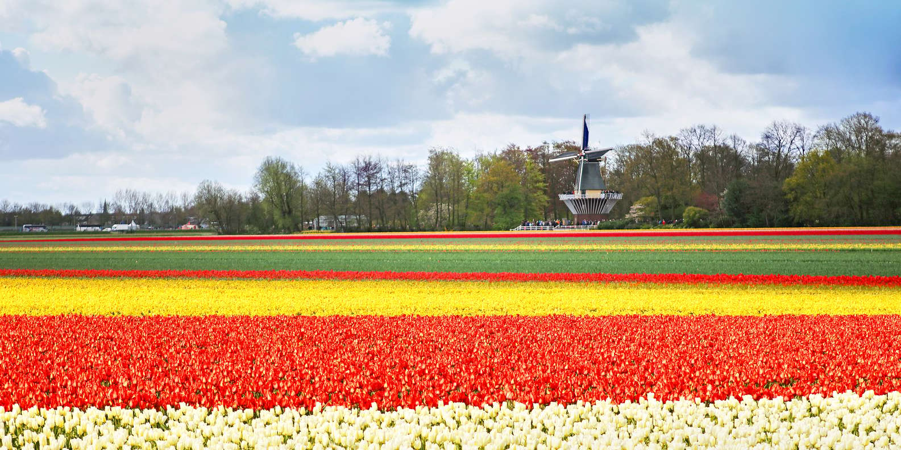
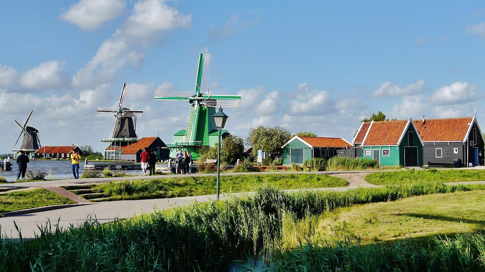

Propuesta gastronomica
-

¿Quienes somos?
Van der Mar es un restaurante de categoría cuatro tenedores, su especialidad es la cocina holandesa, fue diseñado con la intención de satisfacer a sus comensales con una experiencia culinaria completa inspirada y basada en la cultura y tradición de los Países Bajos. Su nombre proviene de la expresión neerlandesa "Van der", utilizada históricamente en apellidos relacionados con regiones o procedencias, mientras que "Mar" hace referencia a la estrecha relación de los Países Bajos con el mar, la pesca y el comercio marítimo. El nombre intenta conectar aspectos entrañables holandeses como el mar, fundamental dentro del desarrollo integral de este país
-

¿Que hacemos?
Van der Mar es un restaurante ubicado en la zona turística de la ciudad de Trujillo que ofrece una propuesta gastronómica basada exclusivamente en la cocina holandesa tradicional y contemporánea. El establecimiento busca introducir al mercado local una alternativa innovadora y poco explorada dentro de la oferta gastronómica peruana, permitiendo a los visitantes descubrir sabores, técnicas culinarias y tradiciones propias de los Países Bajos.
-
Objetivo
Ofrecer una experiencia gastronómica auténtica basada en la cocina holandesa, satisfaciendo las necesidades de un público que busca propuestas innovadoras, exclusivas y de alta calidad en la ciudad de Trujillo. Asimismo, se busca posicionar a Var del Mar como un referente de gastronomía internacional dentro del Perú, diferenciándose de la competencia mediante una oferta especializada, sostenible, y rentable capaz de generar valor cultural y económico dentro del sector turístico y gastronómico local.